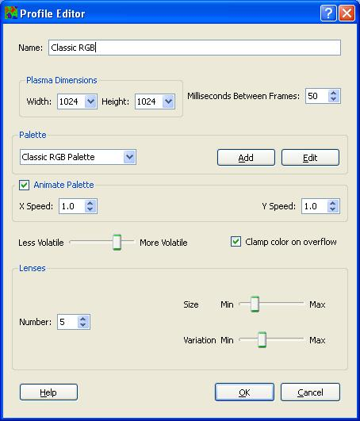

Profile Editor

The Basics
Each profile contains several important options that the
user is able to adjust. Before discussing these options, however,
lets take a moment to go over the basics. In order to generate
a plasma fractal, PlasmaLenz requires a palette of colors to use,
the dimensions of the fractal to generate, and a factor of
volatility. All three factor into how varied the fractals look,
larger fractals with a larger number of different colors, and a
larger factor of volatility will have more variation than
smaller fractals with a fewer number of different colors and
a smaller factor of volatility.
After generating the plasma
fractal, PlasmaLenz has the ability to rotate through the
palette, which causes the fractal to look like its "flowing".
Additionally, PlasmaLenz has the ability to add lens sprites to
the screen, which create a nice "bubble" like effect.
The Nitty-Gritty
Here we will discuss the specifics of each parameter.
- Width, Height - These are the dimensions of the
plasma, and required to be a power of 2, thus the drop-down
boxes.
- Milliseconds Between Frames - This parameter controls
the number of milliseconds to wait before starting the
next frame after the current frame is initiated. In other
words, this is a lower bound on the rendering speed. If it
takes your machine longer than the value of this parameter to
render each scene, the result will be dropped frames. Smaller
values for this parameter can result in smoother animation,
if the machine can handle it. The
maximum framerate can be calculated by dividing 1000
by the value of this parameter. For example, for a value of
50, the maximum framerate will be 1000 / 50 = 20 frames per
second.
- Palette - this is the palette to use to color the
plasma fractal. Use the drop-down list to select one of
the available palettes, or you can add a new palette by
clicking the "Add" button to the right. Clicking the "Edit"
button will edit the palette currently selected. For more
information on palettes and the Palette Editor, please
click here. For
more suggestions on designing a palette, please see below.
- Animate Palette - When this box is checked,
PlasmaLenz will rotate through the palette colors, creating
a fluid-like animation.
- X Speed, Y Speed - These parameters control the
speed at which the palette is rotated through in the X (or
primary) and Y (or secondary) directions. The larger
the number, the quicker the rotation. A value of 1.0
corresponds to stepping one color per frame.
- Volatility - This slider controls the amount of
variation, or volatility, within the plasma field.
- Clamp color on overflow - When checked, this
parameter will cause the plasma fractal to clamp to the endmost
color when it exceeds an endpoint, as opposed to wrapping
around to the other side.
- Number of Lenses - This parameter controls the
maximum number of lenses allowed on screen at any given time.
The number of lenses on screen can be smaller than this
number, but not larger.
- Size - This parameter controls the size of the
lenses. Size will determine the amount of warping the lens
will cause.
- Variation - This parameter controls how much
variation there is in the size of the lenses. Moving
the slider all the way to left to "Min" will result in all
lenses having the same size.
Palette Considerations
Palette design is a bit of an artform, but some guidelines
that I stick to are as follows:
- Stick to a small number of "key" colors, say 3-5.
- Keep a consistent amount of undefined colors between
each "key" color, say 15 or 31.
- Utilize color interpolation and color wrapping.
- Have fun doing it!
Performance
The two parameters that affect performance the most are
the plasma dimensions and the number of milliseconds between
frames. If the screen saver seems jerky, try increasing the
number of milliseconds between frames and reducing the plasma
dimensions. Raw CPU power is part of the equation, but the
biggest bottleneck is the speed of your computer's front-side
bus. For slower buses, reducing the dimensions of the
plasma will have a huge effect. The number and size of the
lenses will also have an effect on the speed, particularly
for slower CPUs. Field volatility, the size of the
palette, and the palette rotation speed won't have an effect
on the frame rate at all, however
larger palettes will "flow" more slowly, due to the larger
number of colors to iterate through. This goes for
2D palettes, also.
Where To Look For More Info
For more help, feel free to visit us at
http://sites.google.com/site/idlescreenproject/, where
you can take advantage of the FAQS, Wiki, and user lists.
Back To the Main Page